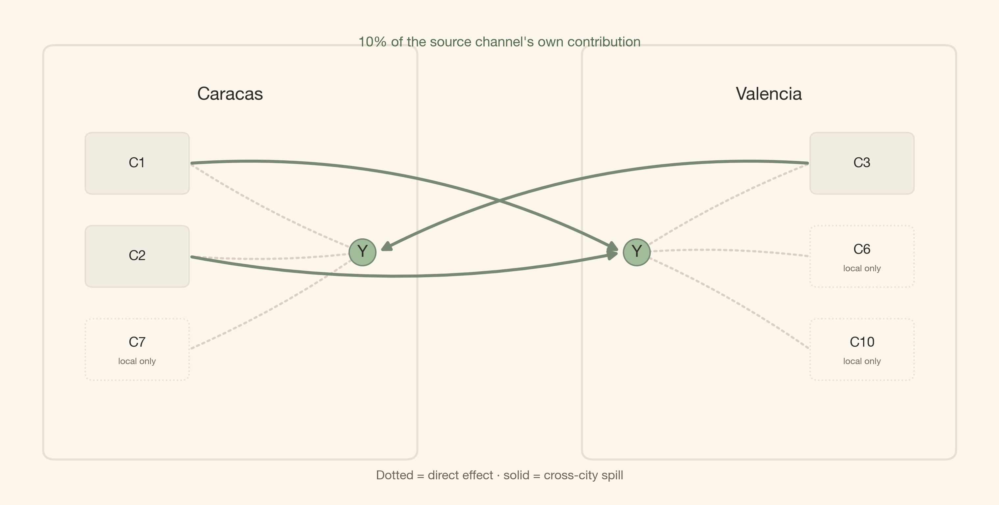

mmm.add_mu_effect(spill_effect)Media Does Not Stop at the City Border: Cross-City Spillovers with PyMC-Marketing
mmm
pymc-marketing
bayesian
python
A glass-box guide to adding sparse, bounded cross-city media spillovers to a multidimensional PyMC-Marketing MMM.
Introduction
“We fit one marketing mix model per city, so every campaign belongs to the city where we booked the spend.”
That is a useful reporting convention. It is not always a useful model of the world. Radio signals cross municipal borders. A launch in Caracas may lift branded search in Valencia. A creator campaign aimed at Valencia may send orders somewhere else entirely. If we force every city to live in isolation, those extra orders do not disappear; the model simply gives them the wrong name.
The good news is that PyMC-Marketing already gives us the extension point. We keep the base multidimensional MMM, write one additive MuEffect, describe the plausible routes with a Boolean mask, and register it with one line:
The rest of this article opens that line up. First the business picture, then the equation, then the tensor shapes, and only then the full class.
Quick summary
This article walks you through:
- The failure: two independent city MMMs have no term for media that starts in one city and converts in another.
- The data laboratory: two synthetic cities with three known spill routes, each carrying exactly 10% of the source channel’s true contribution.
- The PyMC-Marketing extension: a custom
MuEffectthat reuses the fitted direct media contribution instead of rebuilding adstock and saturation. - The sparse policy:
MaskedPriorsamples only three plausible spill coefficients rather than all twenty source-city-by-channel candidates. - The evidence: sampler diagnostics, direct-effect recovery, and posterior spill recovery against known ground truth.
The whole API idea
A multidimensional MMM(dims=("city",)) already produces channel_contribution with city and channel coordinates. A custom MuEffect can read that tensor, route a bounded share to another city, and return a (date, city) contribution to the model mean.
Getting started
Code
import sys
import warnings
warnings.filterwarnings("ignore", category=FutureWarning)
from typing import Any
from pydantic import Field, InstanceOf
from pymc_extras.prior import Prior
from pymc_marketing.mmm import GeometricAdstock, MichaelisMentenSaturation
from pymc_marketing.mmm.additive_effect import MuEffect
from pymc_marketing.mmm.multidimensional import MMM
from pymc_marketing.mmm.scaling import DataDerivedScaling, FixedScaling, Scaling
from pymc_marketing.special_priors import MaskedPrior
import arviz as az
import pymc as pm
import pymc.dims as pmd
import pymc_marketing
import numpy as np
import pandas as pd
import xarray as xr
import matplotlib as mpl
import matplotlib.pyplot as plt
from matplotlib.patches import FancyArrowPatch, FancyBboxPatchNotebook setup
Code
COLORS = {
"primary": "#778873",
"secondary": "#A1BC98",
"accent": "#DCCFC0",
"bg": "#FDF6ED",
"ink": "#2B2A26",
"ink_muted": "#6B665C",
"green_strong": "#4F6B4A",
"brown": "#6B5A48",
"line": "#E6DFD2",
"surface_alt": "#F2EDE3",
}
mpl.rcParams.update({
"figure.facecolor": COLORS["bg"],
"axes.facecolor": COLORS["bg"],
"axes.edgecolor": COLORS["line"],
"axes.labelcolor": COLORS["ink"],
"text.color": COLORS["ink"],
"xtick.color": COLORS["ink_muted"],
"ytick.color": COLORS["ink_muted"],
"grid.color": COLORS["line"],
"grid.alpha": 0.6,
"font.family": "sans-serif",
"font.sans-serif": ["Inter", "Manrope", "Helvetica Neue", "Arial"],
"axes.titleweight": "semibold",
"axes.titlesize": 13,
"axes.spines.top": False,
"axes.spines.right": False,
"figure.dpi": 150,
"figure.constrained_layout.use": True,
})
%config InlineBackend.figure_format = "retina"
def article_table(
frame: pd.DataFrame,
caption: str,
formats: dict[str, str] | None = None,
):
"""Render a compact, index-free table using the site theme."""
styled = frame.style.hide(axis="index").set_caption(caption)
return styled.format(formats) if formats else styled
seed: int = sum(map(ord, "media does not stop at the city border"))
environment = pd.DataFrame({
"Python": [sys.version.split()[0]],
"PyMC": [pm.__version__],
"PyMC-Marketing": [pymc_marketing.__version__],
"Random seed": [seed],
})
display(article_table(environment, "Reproducible notebook environment"))| Python | PyMC | PyMC-Marketing | Random seed |
|---|---|---|---|
| 3.13.14 | 6.0.1 | 1.0.0 | 3567 |
A small spill creates a real attribution problem
We will use two deliberately simple synthetic cities, Caracas and Valencia. Both have ten media channels, two observed controls, and 104 weekly observations. The own-city response uses normalized geometric adstock with l_max=4 followed by Michaelis–Menten saturation.
Three direct media paths also reach the other city:
- Caracas C1 \rightarrow Valencia
- Caracas C2 \rightarrow Valencia
- Valencia C3 \rightarrow Caracas
Each path transfers 10% of the source channel’s true own-city contribution. Everything else is structurally absent.
Code
fig, ax = plt.subplots(figsize=(10, 5))
ax.set_xlim(0, 10)
ax.set_ylim(0, 6)
ax.axis("off")
city_specs = {
"Caracas": {
"x": 0.5,
"channel_x": 0.85,
"active": ["C1", "C2", "C7"],
"spill": ["C1", "C2"],
"target": (3.6, 3.0),
"flow": "right",
},
"Valencia": {
"x": 6.0,
"channel_x": 8.25,
"active": ["C3", "C6", "C10"],
"spill": ["C3"],
"target": (6.4, 3.0),
"flow": "left",
},
}
node_positions = {}
for city, spec in city_specs.items():
box = FancyBboxPatch(
(spec["x"], 0.6), 3.5, 4.8,
boxstyle="round,pad=0.16,rounding_size=0.12",
facecolor=COLORS["bg"], edgecolor=COLORS["line"], linewidth=1.5,
)
ax.add_patch(box)
ax.text(spec["x"] + 1.75, 4.95, city, ha="center", va="center", weight=600, fontsize=13)
for idx, channel in enumerate(spec["active"]):
y_pos = 4.1 - idx * 1.15
channel_x = spec["channel_x"]
is_spill_source = channel in spec["spill"]
channel_box = FancyBboxPatch(
(channel_x, y_pos - 0.3), 0.9, 0.6,
boxstyle="round,pad=0.08,rounding_size=0.08",
facecolor=COLORS["surface_alt"] if is_spill_source else COLORS["bg"],
edgecolor=COLORS["line"],
linestyle="-" if is_spill_source else ":",
)
ax.add_patch(channel_box)
ax.text(
channel_x + 0.45,
y_pos + (0.08 if not is_spill_source else 0),
channel,
ha="center",
va="center",
fontsize=10,
)
if not is_spill_source:
ax.text(
channel_x + 0.45,
y_pos - 0.15,
"local only",
ha="center",
va="center",
fontsize=6.5,
color=COLORS["ink_muted"],
)
channel_edge = (
channel_x + 0.98 if spec["flow"] == "right" else channel_x - 0.08
)
node_positions[(city, channel)] = (channel_edge, y_pos)
direct_arrow = FancyArrowPatch(
(channel_edge, y_pos), spec["target"],
arrowstyle="-|>", mutation_scale=11, linewidth=1.6, linestyle=":",
color=COLORS["accent"], connectionstyle="arc3,rad=0.05",
)
ax.add_patch(direct_arrow)
ax.text(*spec["target"], "Y", ha="center", va="center", fontsize=12, weight=600,
bbox={"boxstyle": "circle,pad=0.35", "fc": COLORS["secondary"], "ec": COLORS["primary"]})
route_specs = [
("Caracas", "C1", (6.25, 3.0), -0.14),
("Caracas", "C2", (6.25, 3.0), 0.10),
("Valencia", "C3", (3.75, 3.0), 0.14),
]
for source, channel, endpoint, rad in route_specs:
start = node_positions[(source, channel)]
arrow = FancyArrowPatch(
start, endpoint, arrowstyle="-|>", mutation_scale=14, linewidth=2.2,
color=COLORS["primary"], connectionstyle=f"arc3,rad={rad}",
)
ax.add_patch(arrow)
ax.text(5.0, 5.55, "10% of the source channel's own contribution", ha="center",
color=COLORS["green_strong"], fontsize=10, weight=600)
ax.text(5.0, 0.2, "Dotted = direct effect · solid = cross-city spill", ha="center",
color=COLORS["ink_muted"], fontsize=9)
plt.show()
The question is simple: how do we let an MMM keep the source channel’s temporal shape while assigning part of its contribution to a different city?
The synthetic laboratory makes the missing term observable
The two base CSVs come from prior-generator. Confounding is disabled and the baseline is deliberately stable so the cross-city term is the only structural complication we add. We then use the generator’s true channel contributions to inject the three spill paths.
What exactly changes in the target? Let V and C abbreviate Valencia and Caracas, and let \tau_{s,k,t} denote channel k’s true own-city contribution in source city s at week t. Then:
\begin{aligned} Y^{\star}_{V,t} &= Y_{V,t} \\ &\quad + 0.10\tau_{C,C1,t} \\ &\quad + 0.10\tau_{C,C2,t}, \\ Y^{\star}_{C,t} &= Y_{C,t} + 0.10\tau_{V,C3,t}. \end{aligned}
The multiplier is fixed at 10% in the data-generating process. The model will not receive those contribution columns; they remain behind the curtain for scoring.
Code
CITIES = ("Caracas", "Valencia")
CHANNELS = [f"C{k}" for k in range(1, 11)]
CONTROLS = ["Z1", "Z2"]
TRUE_SPILL_SHARE = 0.10
PANEL_DIMS = ("city",)
PANEL_CHANNEL_DIMS = ("city", "channel")
PANEL_CONTROL_DIMS = ("city", "control")
SPEND_DIMS = ("spend_city",)
SPEND_CHANNEL_DIMS = ("spend_city", "channel")
SPILL_PATH_DIMS = ("city", "spend_city", "channel")
SPEND_RENAME = {"city": "spend_city"}
SPILL_ROUTES = (
("Caracas", "Valencia", "C1"),
("Caracas", "Valencia", "C2"),
("Valencia", "Caracas", "C3"),
)
valencia_raw = pd.read_csv("../../data/valencia_raw.csv", parse_dates=["date"])
caracas_raw = pd.read_csv("../../data/caracas_raw.csv", parse_dates=["date"])
valencia_truth = pd.read_csv("../../data/valencia_contributions.csv", parse_dates=["date"])
caracas_truth = pd.read_csv("../../data/caracas_contributions.csv", parse_dates=["date"])
assert valencia_raw["date"].equals(caracas_raw["date"])
assert valencia_truth["date"].equals(caracas_truth["date"])
valencia = valencia_raw.rename(columns={"Y": "y_base"}).copy()
caracas = caracas_raw.rename(columns={"Y": "y_base"}).copy()
valencia["spill_truth"] = TRUE_SPILL_SHARE * (
caracas_truth["contrib_C1"].to_numpy() + caracas_truth["contrib_C2"].to_numpy()
)
caracas["spill_truth"] = TRUE_SPILL_SHARE * valencia_truth["contrib_C3"].to_numpy()
for frame in (valencia, caracas):
frame["y"] = frame["y_base"] + frame["spill_truth"]
panel = pd.concat([caracas, valencia], ignore_index=True).sort_values(
["date", "city"], ignore_index=True
)
spill_columns = [
"contrib_spill_from_caracas_C1",
"contrib_spill_from_caracas_C2",
"contrib_spill_from_valencia_C3",
]
for frame in (caracas_truth, valencia_truth):
for column in spill_columns:
frame[column] = 0.0
valencia_truth["contrib_spill_from_caracas_C1"] = (
TRUE_SPILL_SHARE * caracas_truth["contrib_C1"].to_numpy()
)
valencia_truth["contrib_spill_from_caracas_C2"] = (
TRUE_SPILL_SHARE * caracas_truth["contrib_C2"].to_numpy()
)
caracas_truth["contrib_spill_from_valencia_C3"] = (
TRUE_SPILL_SHARE * valencia_truth["contrib_C3"].to_numpy()
)
truth = pd.concat([caracas_truth, valencia_truth], ignore_index=True).sort_values(
["date", "city"], ignore_index=True
)
truth["contrib_spill_total"] = truth[spill_columns].sum(axis=1)
model_data = panel[["date", "city", *CHANNELS, *CONTROLS, "y"]].rename(columns={"y": "Y"})
model_data.to_csv("../../data/mmm_data_raw.csv", index=False)
truth.to_csv("../../data/mmm_data_contributions.csv", index=False)
assert np.allclose(panel["y"] - panel["y_base"], panel["spill_truth"])
assert np.allclose(
panel["spill_truth"].to_numpy(), truth["contrib_spill_total"].to_numpy()
)
assert truth["contrib_spill_total"].abs().sum() > 0
X = panel[["date", "city", *CHANNELS, *CONTROLS]]
y = panel["y"]
dgp_rows = []
for city in CITIES:
city_truth = truth.loc[truth["city"].eq(city)]
active_channels = [
channel for channel in CHANNELS
if abs(city_truth[f"contrib_{channel}"].sum()) > 1e-10
]
dgp_rows.append({
"City": city,
"Weeks": city_truth["date"].nunique(),
"Active direct channels": ", ".join(active_channels),
"True cumulative spill": city_truth["contrib_spill_total"].sum(),
})
dgp_summary = pd.DataFrame(dgp_rows)
display(article_table(
dgp_summary,
"Synthetic panel used by the MMM",
{"True cumulative spill": "{:.2f}"},
))| City | Weeks | Active direct channels | True cumulative spill |
|---|---|---|---|
| Caracas | 104 | C1, C2, C7 | 9.52 |
| Valencia | 104 | C3, C6, C10 | 11.62 |
Code
fig, axes = plt.subplots(1, 2, figsize=(10, 4.5), sharex=True)
for ax, city in zip(axes, CITIES, strict=True):
city_data = panel.loc[panel["city"].eq(city)]
ax.plot(city_data["date"], city_data["y_base"], color=COLORS["ink_muted"],
linewidth=1.1, label="Target before spill")
ax.plot(city_data["date"], city_data["y"], color=COLORS["primary"],
linewidth=1.5, label="Target after spill")
ax.fill_between(
city_data["date"], city_data["y_base"], city_data["y"],
color=COLORS["secondary"], alpha=0.55, label="Cross-city lift",
)
ax.set(title=city, xlabel="Week", ylabel="Sales")
ax.grid(axis="y")
axes[0].legend(frameon=False, loc="best")
plt.show()
Two independent MMMs cannot name the shaded contribution
The familiar model fits each city with its own channels, controls, and baseline:
Y_{r,t}=\mu^{\text{direct}}_{r,t}+\epsilon_{r,t}.
That model may predict well. It still has no route where a source city s differs from the receiving city r. The shaded signal in Figure 2 must leak into direct attribution, the baseline, controls, or residual noise.
This is the controlled failure. The problem is not that the base MMM is badly implemented. The problem is that its mean function cannot express the business mechanism.
Could we just add the other city’s raw spend as controls? We could, but then we would estimate a second response curve disconnected from the source campaign’s fitted adstock and saturation. Reusing the source contribution is both more parsimonious and easier to interpret.
The corrected mean adds one term:
\begin{aligned} Y_{r,t} &= \mu^{\text{direct}}_{r,t} + S_{r,t} + \epsilon_{r,t}, \\ S_{r,t} &= \sum_{s\neq r}\sum_{k=1}^{K} M_{r,s,k}\,\rho_{s,k} \\ &\qquad \times g_{s,k}(X_{s,k,t}). \end{aligned}
where:
- S_{r,t} is the total spill arriving in receiving city r;
- g_{s,k}(X_{s,k,t}) is the already fitted direct contribution after adstock and saturation;
- M_{r,s,k}\in\{0,1\} is the known route mask;
- \rho_{s,k} is the learned share exported by source city s and channel k;
- the sum returns one spill contribution for each receiving city r and week t.
The theory reconnects here: the mask is structural knowledge; the share is posterior uncertainty.
A mask turns a business policy into three parameters
With two cities and ten channels, there are twenty possible source-city-by-channel spill coefficients. Our policy allows three. The other seventeen should not be weakly regularized or estimated near zero. They should not exist in the graph.
spill_mask_values = np.zeros(
(len(CITIES), len(CITIES), len(CHANNELS)), dtype=bool
)
for source_city, receiver_city, channel in SPILL_ROUTES:
spill_mask_values[
CITIES.index(receiver_city),
CITIES.index(source_city),
CHANNELS.index(channel),
] = True
spill_path_mask = xr.DataArray(
spill_mask_values,
dims=SPILL_PATH_DIMS,
coords={
"city": list(CITIES),
"spend_city": list(CITIES),
"channel": CHANNELS,
},
)
source_active_mask = spill_path_mask.any("city").transpose(*SPEND_CHANNEL_DIMS)
assert int(source_active_mask.sum()) == len(SPILL_ROUTES) == 3Code
fig, ax = plt.subplots(figsize=(9, 2.8))
mask_plot = source_active_mask.astype(int)
cmap = mpl.colors.ListedColormap([COLORS["surface_alt"], COLORS["primary"]])
ax.imshow(mask_plot, aspect="auto", cmap=cmap, vmin=0, vmax=1)
ax.set_xticks(range(len(CHANNELS)), CHANNELS)
ax.set_yticks(range(len(CITIES)), CITIES)
ax.set(xlabel="Source channel", ylabel="Source city")
for row, city in enumerate(CITIES):
for col, channel in enumerate(CHANNELS):
if bool(source_active_mask.sel(spend_city=city, channel=channel)):
receiver = next(
target for source, target, route_channel in SPILL_ROUTES
if source == city and route_channel == channel
)
ax.text(col, row, f"to {receiver[0]}", ha="center", va="center",
color=COLORS["bg"], fontsize=8, weight=600)
for x in np.arange(-0.5, len(CHANNELS), 1):
ax.axvline(x, color=COLORS["line"], linewidth=0.8)
ax.set_title("Active spill coefficients")
plt.show()
MaskedPrior is a gate, not a shrinkage prior
The wrapped prior is sampled only where the mask is True, then expanded back to the full labeled tensor with exact zeros elsewhere. Here that means three free spill parameters instead of twenty.
Theoretical lens
I approach this as a Bayesian measurement problem with structural knowledge. The route mask encodes what the business considers possible: which source-city campaigns can affect which receiving city. The posterior then estimates how large those allowed effects are.
That distinction matters. MaskedPrior does not discover the graph. It expresses the graph we are willing to estimate. In this example, the topology is known and sparse; the magnitudes are uncertain.
From a causal perspective, this is still an observational attribution model. The extension can represent cross-city spill once we make the relevant assumptions, but it cannot prove that a campaign caused the spill. It foregrounds a missing mechanism in the likelihood; it does not replace experimental design, interference assumptions, or geographic lift tests.
The custom effect reuses what the MMM already knows
We call this class SpillEffect. It inherits PyMC-Marketing’s MuEffect protocol.
It has three responsibilities:
- register the source-city coordinate and the fixed path mask;
- create the bounded shares only on active source-channel pairs;
- route the fitted direct contribution to the receiving city and return
(date, city).
We model
u_{s,k}\sim\operatorname{Beta}(1,1), \qquad \rho_{s,k}=\rho_{\max}u_{s,k},
with \rho_{\max}=0.20. The synthetic truth is 0.10, so it sits inside — not on the boundary of — the model’s plausible interval.
class SpillEffect(MuEffect):
"""Route a bounded share of direct media contribution across cities."""
source_active_mask: InstanceOf[xr.DataArray] = Field(exclude=True)
spill_path_mask: InstanceOf[xr.DataArray] = Field(exclude=True)
fraction_prior: InstanceOf[Prior]
max_share: float = Field(default=0.20, gt=0, le=1)
prefix: str = "spill"
@staticmethod
def _serialize_mask(mask: xr.DataArray) -> dict[str, Any]:
"""Convert a fixed Boolean mask to JSON-compatible values."""
return {
"dims": list(mask.dims),
"coords": {dim: mask.coords[dim].values.tolist() for dim in mask.dims},
"values": mask.astype(bool).values.tolist(),
}
@property
def contribution_var_name(self) -> str:
"""Name of the deterministic contribution stored in the posterior."""
return f"{self.prefix}_contribution"
def to_dict(self) -> dict[str, Any]:
"""Serialize the custom effect for inference-data provenance."""
return {
"prefix": self.prefix,
"max_share": self.max_share,
"fraction_prior": self.fraction_prior.to_dict(),
"source_active_mask": self._serialize_mask(self.source_active_mask),
"spill_path_mask": self._serialize_mask(self.spill_path_mask),
}
def create_data(self, mmm: Any) -> None:
"""Register the source-city coordinate and route mask."""
model = mmm.model
model.add_coord("spend_city", values=model.coords["city"])
pmd.Data(
f"{self.prefix}_path_mask",
self.spill_path_mask.astype(float).values,
dims=SPILL_PATH_DIMS,
)
def create_effect(self, mmm: Any):
"""Build one spill contribution per week and receiving city."""
model = mmm.model
fraction = MaskedPrior(
self.fraction_prior,
mask=self.source_active_mask,
active_dim=f"{self.prefix}_active_source_channel",
).create_variable(f"{self.prefix}_fraction", xdist=True)
total_share = pmd.Deterministic(
f"{self.prefix}_total_share",
(self.max_share * fraction).transpose(*SPEND_CHANNEL_DIMS),
)
path_share = pmd.Deterministic(
f"{self.prefix}_path_share",
(total_share * model[f"{self.prefix}_path_mask"]).transpose(
*SPILL_PATH_DIMS
),
)
source_direct_original = pmd.Deterministic(
f"{self.prefix}_source_direct_original_scale",
(model["channel_contribution"] * model["target_scale"])
.rename(SPEND_RENAME)
.transpose("date", *SPEND_CHANNEL_DIMS),
)
by_path_original = pmd.Deterministic(
f"{self.prefix}_by_path_original_scale",
(source_direct_original * path_share).transpose(
"date", *SPILL_PATH_DIMS
),
)
contribution_original = pmd.Deterministic(
f"{self.prefix}_contribution_original_scale",
by_path_original.sum(dim=(*SPEND_DIMS, "channel")).transpose(
"date", *PANEL_DIMS
),
)
return pmd.Deterministic(
f"{self.prefix}_contribution",
(contribution_original / model["target_scale"]).transpose(
"date", *PANEL_DIMS
),
)
def set_data(self, mmm: Any, model: pm.Model, X: xr.Dataset) -> None:
"""No effect-owned data to update; the MMM refreshes channel data first."""
del mmm, model, XMost of the class is named tensor bookkeeping. The actual model change is the short chain inside create_effect:
\begin{gathered} \text{direct contribution} \\ \times\ \text{bounded share} \\ \times\ \text{route mask} \\ \downarrow\ \sum_{s,k} \\ \text{spill by receiving city} \end{gathered}
PyMC-Marketing only needs one extra effect
To keep the demonstration about spill rather than variable selection, we use the synthetic truth to mask direct city-channel pairs that do not affect either target. This leaves six direct response curves and three spill coefficients. In real work, do not build that direct mask from outcomes; use channel availability, prior business knowledge, or a proper variable-selection strategy.
Code
contribution_columns = [f"contrib_{channel}" for channel in CHANNELS]
direct_activity = (
truth.groupby("city")[contribution_columns]
.sum()
.abs()
.gt(1e-10)
.reindex(CITIES)
)
direct_activity.columns = CHANNELS
direct_path_mask = xr.DataArray(
direct_activity.to_numpy(),
dims=PANEL_CHANNEL_DIMS,
coords={"city": list(CITIES), "channel": CHANNELS},
)
assert int(direct_path_mask.sum()) == 6Because channels and targets are max-scaled, the response priors below live on a comparable scale across cities. A positive intercept removes a spurious negative-baseline mode, while a log-normal half-saturation prior keeps the sampler away from a zero-boundary funnel. These are geometry choices, not evidence about the spill routes.
adstock = GeometricAdstock(
l_max=4,
priors={
"alpha": MaskedPrior(
Prior("Beta", alpha=2, beta=2, dims=PANEL_CHANNEL_DIMS),
mask=direct_path_mask,
active_dim="direct_active_city_channel",
)
},
)
saturation = MichaelisMentenSaturation(
priors={
"alpha": MaskedPrior(
Prior("Gamma", mu=0.20, sigma=0.15, dims=PANEL_CHANNEL_DIMS),
mask=direct_path_mask,
active_dim="direct_active_city_channel",
),
"lam": MaskedPrior(
Prior("LogNormal", mu=-0.69, sigma=0.75, dims=PANEL_CHANNEL_DIMS),
mask=direct_path_mask,
active_dim="direct_active_city_channel",
),
}
)
spill_effect = SpillEffect(
source_active_mask=source_active_mask,
spill_path_mask=spill_path_mask,
fraction_prior=Prior("Beta", alpha=1, beta=1, dims=SPEND_CHANNEL_DIMS),
max_share=0.20,
)
target_scale = panel.groupby("city")["y"].max().reindex(CITIES)
target_scale_array = xr.DataArray(
target_scale.to_numpy(),
dims=PANEL_DIMS,
coords={"city": list(CITIES)},
)
mmm = MMM(
date_column="date",
target_column="y",
channel_columns=CHANNELS,
control_columns=CONTROLS,
dims=PANEL_DIMS,
model_config={
"intercept": Prior("HalfNormal", sigma=1, dims=PANEL_DIMS),
"gamma_control": Prior(
"Normal", mu=0, sigma=0.10, dims=PANEL_CONTROL_DIMS
),
"likelihood": Prior(
"Normal",
sigma=Prior("HalfNormal", sigma=0.02, dims=PANEL_DIMS),
dims=("date", *PANEL_DIMS),
),
},
scaling=Scaling(
channel=DataDerivedScaling(method="max", dims=()),
target=FixedScaling(dims=(), value=target_scale_array),
),
adstock=adstock,
saturation=saturation,
)
mmm.add_mu_effect(spill_effect)
mmm.build_model(X, y)
mmm.add_original_scale_contribution_variable(
["y", "channel_contribution", "control_contribution", "intercept_contribution"]
)<pymc_marketing.mmm.mmm.MMM at 0x31befbe00>The model graph should contain exactly three free spill parameters. That is the computational payoff of the mask.
initial_point = mmm.model.initial_point()
spill_key = next(name for name in initial_point if name.startswith("spill_fraction_active"))
assert initial_point[spill_key].size == len(SPILL_ROUTES) == 3
assert np.isfinite(mmm.model.compile_logp()(initial_point))
free_rv_names = sorted(variable.name for variable in mmm.model.free_RVs)
model_structure = pd.DataFrame({
"Layer": ["Panel", "Direct media", "Cross-city spill", "Likelihood"],
"Estimated structure": [
"2 city intercepts + 4 control coefficients",
"6 active city-channel response curves",
"3 bounded shares from 20 candidates",
"2 city-specific residual scales",
],
})
display(article_table(model_structure, "What the model samples"))| Layer | Estimated structure |
|---|---|
| Panel | 2 city intercepts + 4 control coefficients |
| Direct media | 6 active city-channel response curves |
| Cross-city spill | 3 bounded shares from 20 candidates |
| Likelihood | 2 city-specific residual scales |
Clean geometry comes before interpretation
idata = mmm.fit(
X=X,
y=y,
chains=4,
cores=4,
draws=1_000,
tune=1_500,
target_accept=0.95,
random_seed=seed,
progressbar=False,
)free_rv_names = sorted(variable.name for variable in mmm.model.free_RVs)
diagnostics = az.summary(idata, var_names=free_rv_names, round_to=6)
divergences = int(idata.sample_stats["diverging"].sum())
rhat = pd.to_numeric(diagnostics["r_hat"], errors="coerce")
ess_bulk = pd.to_numeric(diagnostics["ess_bulk"], errors="coerce")
max_rhat = float(rhat.max())
min_ess_bulk = float(ess_bulk.min())
diagnostic_overview = pd.DataFrame({
"Metric": ["Divergences", "Maximum r-hat", "Minimum bulk ESS"],
"Observed": [f"{divergences}", f"{max_rhat:.3f}", f"{min_ess_bulk:.0f}"],
"Gate": ["= 0", "< 1.05", "> 100"],
"Status": [
"Pass" if divergences == 0 else "Fail",
"Pass" if max_rhat < 1.05 else "Fail",
"Pass" if min_ess_bulk > 100 else "Fail",
],
})
display(article_table(diagnostic_overview, "Sampler quality gates"))
assert divergences == 0
assert max_rhat < 1.05
assert min_ess_bulk > 100| Metric | Observed | Gate | Status |
|---|---|---|---|
| Divergences | 0 | = 0 | Pass |
| Maximum r-hat | 1.004 | < 1.05 | Pass |
| Minimum bulk ESS | 1367 | > 100 | Pass |
A posterior is only useful after it passes this gate. We also verify the graph itself: diagonal routes are exactly zero, inactive paths remain zero, and no learned share exceeds the 20% cap.
Code
posterior = idata.posterior
path_share = posterior["spill_path_share"]
total_share = posterior["spill_total_share"]
assert bool((total_share >= 0).all())
assert bool((total_share <= spill_effect.max_share + 1e-10).all())
assert bool((path_share.where(~spill_path_mask, 0) == 0).all())
for city in CITIES:
assert bool(
(path_share.sel(city=city, spend_city=city) == 0).all()
)
graph_checks = pd.DataFrame({
"Invariant": [
"All shares are bounded between 0% and 20%",
"Inactive source-receiver-channel paths are exactly zero",
"Every same-city spill path is exactly zero",
],
"Status": ["Pass", "Pass", "Pass"],
})
display(article_table(graph_checks, "Spill-graph invariants"))| Invariant | Status |
|---|---|
| All shares are bounded between 0% and 20% | Pass |
| Inactive source-receiver-channel paths are exactly zero | Pass |
| Every same-city spill path is exactly zero | Pass |
Known truth lets us score both layers
Before trusting the spill result, we check the base MMM. Each point below is one active own-city channel. Perfect cumulative recovery lies on the diagonal. Several paths are close; C1, C7, and C10 are understated. That miss matters because the spill effect deliberately inherits the source contribution rather than estimating a second response curve.
Code
post_direct_total = (
posterior["channel_contribution_original_scale"]
.sum("date")
.mean(("chain", "draw"))
)
true_direct_total = (
truth.groupby("city")[contribution_columns]
.sum()
.reindex(CITIES)
)
true_direct_total.columns = CHANNELS
rows = []
for city in CITIES:
for channel in CHANNELS:
if bool(direct_path_mask.sel(city=city, channel=channel)):
rows.append({
"city": city,
"channel": channel,
"truth": float(true_direct_total.loc[city, channel]),
"posterior": float(post_direct_total.sel(city=city, channel=channel)),
})
direct_recovery = pd.DataFrame(rows)
direct_recovery["relative_error"] = (
direct_recovery["posterior"] / direct_recovery["truth"] - 1
)
display(article_table(
direct_recovery.rename(columns={
"city": "City",
"channel": "Channel",
"truth": "Truth",
"posterior": "Posterior mean",
"relative_error": "Relative error",
}),
"Cumulative direct-contribution recovery",
{
"Truth": "{:.2f}",
"Posterior mean": "{:.2f}",
"Relative error": "{:+.1%}",
},
))| City | Channel | Truth | Posterior mean | Relative error |
|---|---|---|---|---|
| Caracas | C1 | 48.81 | 30.23 | -38.1% |
| Caracas | C2 | 67.38 | 66.14 | -1.8% |
| Caracas | C7 | 76.26 | 59.40 | -22.1% |
| Valencia | C3 | 95.19 | 91.88 | -3.5% |
| Valencia | C6 | 45.07 | 42.96 | -4.7% |
| Valencia | C10 | 60.28 | 34.58 | -42.6% |
Code
fig, ax = plt.subplots(figsize=(7.5, 5.5))
for city, color in zip(CITIES, [COLORS["primary"], COLORS["brown"]], strict=True):
city_rows = direct_recovery.loc[direct_recovery["city"].eq(city)]
ax.scatter(city_rows["truth"], city_rows["posterior"], s=55, color=color, label=city)
for row in city_rows.itertuples():
ax.annotate(row.channel, (row.truth, row.posterior), xytext=(7, 6),
textcoords="offset points", fontsize=8, color=COLORS["ink_muted"])
limit = float(direct_recovery[["truth", "posterior"]].to_numpy().max()) * 1.08
ax.plot([0, limit], [0, limit], linestyle="--", linewidth=1.2, color=COLORS["ink_muted"])
ax.set(xlim=(0, limit), ylim=(0, limit), xlabel="True cumulative contribution",
ylabel="Posterior mean cumulative contribution")
ax.grid(axis="y")
ax.legend(frameon=False)
plt.show()
The extension’s main test is therefore not “did every path land exactly on 10%?” It is: what can the data distinguish once the correct mechanism exists?
Code
route_rows = []
for source_city, receiver_city, channel in SPILL_ROUTES:
draws = posterior["spill_path_share"].sel(
city=receiver_city,
spend_city=source_city,
channel=channel,
).values.reshape(-1)
low, median, high = np.quantile(draws, [0.03, 0.50, 0.97])
route_rows.append({
"route": f"{source_city} {channel} to {receiver_city}",
"low": low,
"median": median,
"high": high,
})
route_recovery = pd.DataFrame(route_rows)
route_recovery["truth"] = TRUE_SPILL_SHARE
display(article_table(
route_recovery.rename(columns={
"route": "Route",
"truth": "Truth",
"median": "Posterior median",
"low": "3%",
"high": "97%",
})[["Route", "Truth", "Posterior median", "3%", "97%"]],
"Posterior spill shares by allowed route",
{
"Truth": "{:.1%}",
"Posterior median": "{:.1%}",
"3%": "{:.1%}",
"97%": "{:.1%}",
},
))| Route | Truth | Posterior median | 3% | 97% |
|---|---|---|---|---|
| Caracas C1 to Valencia | 10.0% | 3.1% | 0.1% | 13.6% |
| Caracas C2 to Valencia | 10.0% | 15.0% | 8.2% | 19.6% |
| Valencia C3 to Caracas | 10.0% | 7.1% | 1.4% | 13.5% |
Code
fig, ax = plt.subplots(figsize=(8, 4.2))
y_positions = np.arange(len(route_recovery))
ax.errorbar(
route_recovery["median"], y_positions,
xerr=[
route_recovery["median"] - route_recovery["low"],
route_recovery["high"] - route_recovery["median"],
],
fmt="o", color=COLORS["primary"], ecolor=COLORS["primary"],
capsize=4, linewidth=2,
)
ax.axvline(TRUE_SPILL_SHARE, linestyle="--", linewidth=1.5, color=COLORS["brown"],
label="True share = 10%")
ax.set_yticks(y_positions, route_recovery["route"])
ax.set(xlabel="Share of source direct contribution", xlim=(0, spill_effect.max_share))
ax.grid(axis="x")
ax.legend(frameon=False)
plt.show()
Finally, we return to the business unit: weekly sales contribution in the receiving city.
Code
spill_posterior = posterior["spill_contribution_original_scale"]
spill_quantiles = spill_posterior.quantile(
[0.03, 0.50, 0.97], dim=("chain", "draw")
)
spill_total_draws = spill_posterior.sum("date")
city_spill_rows = []
for city in CITIES:
city_draws = spill_total_draws.sel(city=city).to_numpy().reshape(-1)
low, median, high = np.quantile(city_draws, [0.03, 0.50, 0.97])
city_spill_rows.append({
"City": city,
"Truth": panel.loc[panel["city"].eq(city), "spill_truth"].sum(),
"Posterior median": median,
"3%": low,
"97%": high,
})
city_spill_recovery = pd.DataFrame(city_spill_rows)
display(article_table(
city_spill_recovery,
"Cumulative cross-city contribution by receiving city",
{
"Truth": "{:.2f}",
"Posterior median": "{:.2f}",
"3%": "{:.2f}",
"97%": "{:.2f}",
},
))| City | Truth | Posterior median | 3% | 97% |
|---|---|---|---|---|
| Caracas | 9.52 | 6.01 | 1.16 | 16.21 |
| Valencia | 11.62 | 11.09 | 6.25 | 15.34 |
Code
fig, axes = plt.subplots(1, 2, figsize=(10, 4.5), sharex=True)
for ax, city in zip(axes, CITIES, strict=True):
city_panel = panel.loc[panel["city"].eq(city)]
dates = city_panel["date"].to_numpy()
true_path = city_panel["spill_truth"].to_numpy()
low = spill_quantiles.sel(city=city, quantile=0.03).to_numpy()
median = spill_quantiles.sel(city=city, quantile=0.50).to_numpy()
high = spill_quantiles.sel(city=city, quantile=0.97).to_numpy()
ax.plot(dates, true_path, color=COLORS["ink"], linewidth=1.4, label="Truth")
ax.plot(dates, median, color=COLORS["primary"], linewidth=1.4, label="Posterior median")
ax.fill_between(dates, low, high, color=COLORS["secondary"], alpha=0.45,
label="Pointwise 94% interval")
ax.set(title=city, xlabel="Week", ylabel="Cross-city contribution")
ax.grid(axis="y")
axes[0].legend(frameon=False)
plt.show()
The hierarchy in these results is the lesson. Valencia’s individual route shares are broad while their city-level total is close to truth. Caracas has only one incoming route, so its city and route uncertainty coincide. Every interval carries direct-response uncertainty forward: adding the right mechanism does not manufacture information; it makes the remaining uncertainty legible.
Considerations
The route mask is an assumption
The three allowed paths came from the experiment design. In a real organization, they might come from broadcast footprints, campaign eligibility, distribution territories, ecommerce shipping patterns, or a pre-registered spill hypothesis. MaskedPrior makes that assumption computationally honest, but it does not validate it.
More than two cities needs an allocation rule
With two cities, every exporting source has only one possible receiver. With three or more, a source channel may reach several markets. Then we need either receiver-specific shares \rho_{r,s,k} or a total exported share plus an allocation simplex. The MuEffect protocol stays the same; only the routing tensor becomes richer.
What this framework cannot tell us
Even with the right route graph, endogenous campaign placement can mimic spill. If regional demand raises Caracas spend and Valencia sales at the same time, the posterior can load that shared movement onto \rho. Geographic experiments, reach data, and institutional knowledge remain part of the identification strategy.
Do not hide poor geometry behind a good story
Spill parameters are coupled to the source response curve. If direct adstock or saturation is weakly identified, spill will be weakly identified too. Check divergences, r-hat, effective sample size, and direct-effect recovery before interpreting the cross-city posterior.
Conclusions
- Independent city MMMs encode a strong assumption. They say media cannot move outcomes across city boundaries.
- PyMC-Marketing already exposes the right seam. A custom
MuEffectadds the missing mechanism without rewriting the base MMM. - The source response curve should be reused. Spill inherits the source channel’s fitted adstock and saturation instead of estimating a duplicate curve.
- Sparsity belongs in the graph.
MaskedPriorcreates three coefficients for three plausible routes; it does not waste computation estimating seventeen coefficients we believe cannot exist. - Representation is not identification. The model can express spill and quantify uncertainty, but causal claims still require a credible design.
The practical “so what?” is budget allocation. If a campaign creates value outside the market where spend is booked, city-by-city optimization can understate its return and shift money away from campaigns with regional reach. A small modeling extension can change which city receives credit — and therefore which campaign survives the next planning round.
Which cross-market route in your own media plan is currently being forced to look like noise?
Recommended readings
Watermark
Code
watermark = pd.DataFrame({
"Package": ["Python", "PyMC", "PyMC-Marketing"],
"Version": [sys.version.split()[0], pm.__version__, pymc_marketing.__version__],
})
display(article_table(watermark, "Execution watermark"))| Package | Version |
|---|---|
| Python | 3.13.14 |
| PyMC | 6.0.1 |
| PyMC-Marketing | 1.0.0 |